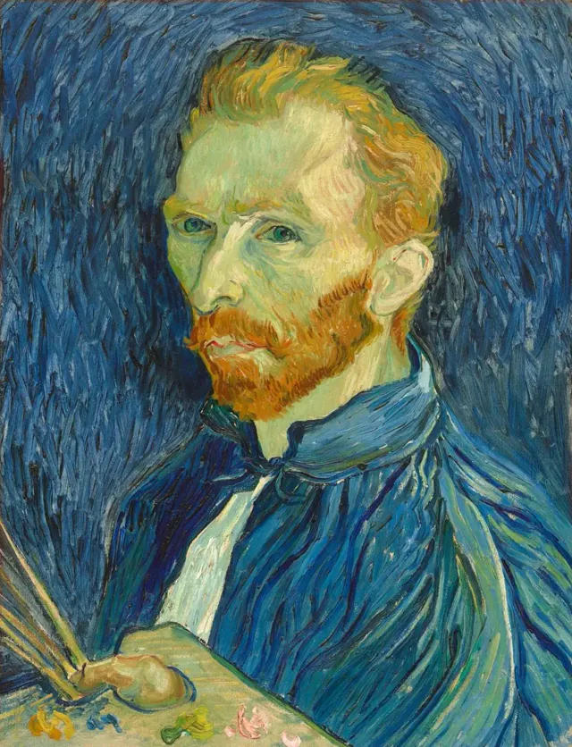
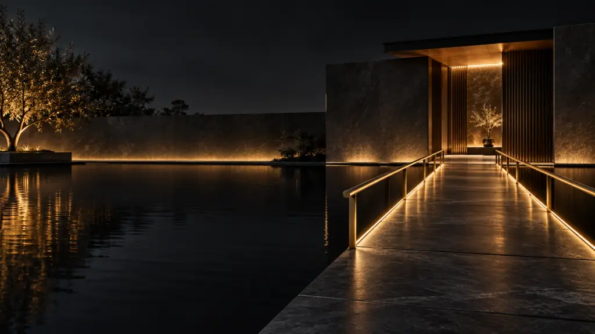

Bepillantás az
életembe
Üdvözöllek!
Hivatásomnak köszönhetően lehetőségem nyílt sokat utazni és különféle kultúrákat megismerni. Bízom benne, hogy a következő fotók nyújtanak némi bepillantást a személyesebb megtapasztalásaimba. Utána megismerheted, mik alakítják az életemet.
Ezt most kihagyomKépek
Ezek a fotók néhány legkedvesebb emlékemet őrzik a bejárt helyekről és az emberekről, akiket az utam során megismertem.
Tunisz, Tunézia
A mediterrán parton
Ghána
Ahol a telefon látványosság
Abuja, Nigéria
Apa a kislányával
Bangkok, Thaiföld
A Grand Palaceban
Ezek a fotók az életem egy apró, de annál fontosabb részét tükrözik. Az utazásaim és a Brüsszelben eltöltött öt év sokkal több történettel ajándékozott meg, mint amennyit itt el tudnék mesélni.
Prioritások
Ez az öt prioritás tükrözi, mi fontos számomra, ezek irányítják a döntéseimet.
1. Család
Kétségtelenül a családom volt a legnagyobb hatással arra, amilyen emberré váltam. Mérhetetlenül hálás vagyok a szüleimnek a szeretetükért, gondoskodásukért és támogatásukért, valamint a lánytestvéremnek, aki mindig mellettem állt. Különösen szerencsésnek érzem magam, hogy a lányom az életem része, és hihetetlenül büszke vagyok rá.
2. Barátok
Nagyra értékelem a barátságaimat, és kiemelt figyelmet fordítok a kapcsolattartásra, még akkor is, amikor igazán sűrűek a napjaim.
3. Spirituális út
A hit az életem fontos részévé vált, melyet a különböző spirituális utak éveken át tartó felfedezése és a saját belső igazságom megtalálása formált.
4. Egyensúly
Törekszem az egyensúly fenntartására a család, a munka, a személyes fejlődés és a saját érdeklődési köreim között. Szeretem a hivatásomat és azokat a lehetőségeket, amelyeket a tanulásra és az új kihívások leküzdésére kínál.
5. Folyamatos fejlődés
Kiemelt fontosságú számomra a folyamatos tanulás és az új készségek elsajátítása. A sikereket és a kudarcokat egyaránt arra használom fel, hogy emberileg és szakmailag is tovább fejlődjek.

Ha egy belső hang azt súgja: „nem vagy te festő”, akkor csak azért is fess, barátom, és az a hang elnémul – de kizárólag a munka által. Csak azok lehetnek a barátaid, akik maguk is megvívják ezt a harcot, és saját tetteik példájával sarkallnak cselekvésre.

Lépjünk kapcsolatba - bátran jelentkezz!
Ha a weboldalon vagy a képek láttán bármi felkeltette az érdeklődésedet, vagy csak kérdeznél valamit, írj egy e-mailt. Örömmel várom az üzenetedet, és igyekszem a lehető leghamarabb visszajelezni.
E-mail Küldése